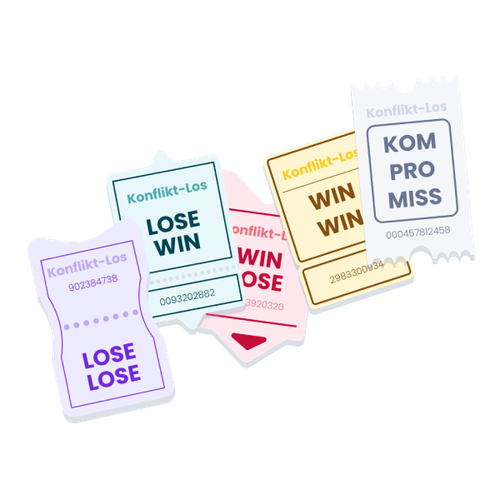

Mit der Academy erhaltet ihr im Business-Plan praxisnahe Lernmodule rund um Facilitation und wirksame Transformation.
Gemeinsam mit 9 Spaces zeigt Plan International Deutschland, wie wertebasiertes Arbeiten Orientierung gibt – nach innen wie nach außen.

Dieses Tool hilft euch dabei, als Team bewusster mit euren individuellen Strategien zur Konfliktbewältigung umzugehen.
Dieses Tool hilft euch, einen gelassenen Umgang mit Krisen zu üben und Gegenmaßnahmen zu entwickeln.
Ein Tool, das dir dabei hilft, deine Beziehungen einzuordnen und zu erkennen, ob es Handlungsbedarf gibt.
Dieses Tool hilft euch dabei, Eigenschaften, die ihr unbewusst ablehnt, aufzudecken und im Team damit umzugehen.